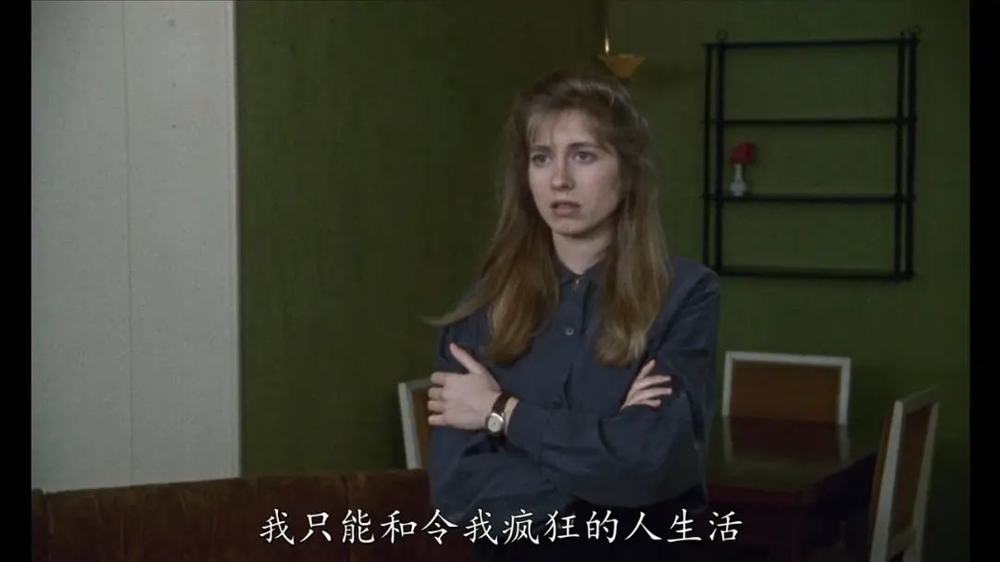

莎士比亚的《冬天的故事》的主题是“复活“。在这部剧中，西西里国王因为嫉妒逼死了王后赫米温妮，却因为一时的嫉恨而悔不当初。在巫女的帮助下，他见到了赫米温妮的雕像，就仿佛她还依旧活在世上，仿佛她的血脉仍在搏动，仿佛她的嘴唇上仍有一丝生者的气息。巫女说道：“来，我会把你的坟墓填塞，把你僵硬固的姿态交给还死亡，因为你已经从死里重新得到了生命。“于是这雕像在国王面前活了过来。在侯麦同名的电影中，菲利茜观看了这幕戏剧，泪流满面。菲利茜始终爱着一个自己错过的男人，她在各种男子之间游走，但是对他们每一位的爱都无法使她满足，因为她遇见的每位男人都不是在她心中期盼的“那一个”，她宿命中的爱人的身影依旧挥之不去。戏剧结束之后，菲利茜的情人抛出了一个意味深长的问题，他说他看不懂这幕戏，他不知道究竟是魔法使雕像复活，还是说王后赫米温妮并没有死去，只是在国王面前假扮为一个毫无生气的雕像？菲利茜回答道，我认为你没有看懂这部剧，那使雕像死而复生的力量是“信仰”。在基督教精神中最为重要的一个意象，就是《马太福音》中记述的基督的复活。我想，对死去的爱人的执念，通过某种信仰上的折跃，便可以转化为对爱人复活的信念。正是因为这种信念，菲利茜在公车上重新遇见了自己的爱人，两人破镜重圆，哀怨和猜忌在此获得了和解。侯麦在电影中为我们展现的，就是对这份“奇迹”的见证。
